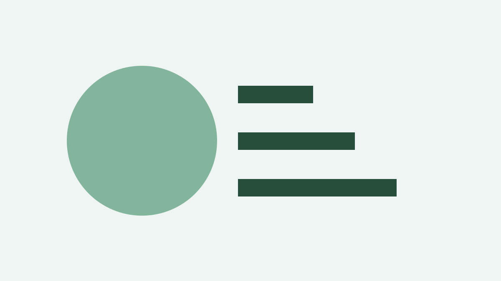

Synthetic legacy News migration edge case
(ECEEE migration fixture, 30 Sep 2026) A labelled synthetic article for validating semantic blocks and unavailable-media handling.
What this checks
An internal link and an external link.
- First unordered item
- Second unordered item
- First ordered item
- Second ordered item
| Measure | Value |
|---|---|
| Saved energy | 42 MWh |
